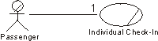

Guidelines:
Communicate-Association in the Business Use-Case Model
communicate-association |
A
communicate-association between a use case and an actor indicates
that an instance of the use case and an instance of the actor will interact. |
Business actors interact with the business by sending and receiving messages.
Both parties can take the initiative to interact.
To fully understand the role of a business actor, you must know in which
processes the actor is involved. This is shown in by the communicate-association
between the business actor and the business use case representing the process.
The communicate-association indicates the existence of an interaction.
The multiplicity of the association shows how many instances of a business
use case one instance of a business actor can interact with at the same time;
conversely, it shows how many instances of a business actor one instance of a
business use case can interact with.
Example:
When an instance of the business actor Passenger approaches
the check-in counter and hands over his ticket and baggage, he sends a message
to an instance of the use case Individual Check-in. At the end of the check-in
procedure, the business use case will print out and hand over a boarding pass,
and one or more customer claim checks to the passenger. The Passenger can only
communicate with one instance of Individual Check-in. Thus, the multiplicity of
the relationship is [1].

A Passenger who wants to check-in at the airport will
interact with the use case Individual Check-in.
When an actor and a use case interact, it can be done using different media.
For example, telephone, fax, mail, and e-mail. One or several messages can be
sent, but there is only one communicate-association between the two.
Copyright
© 1987 - 2001 Rational Software Corporation
|  Artifacts >
Artifacts >
 Business Modeling Artifact Set >
Business Modeling Artifact Set >
 Business Use-Case Model... >
Business Use-Case Model... >
 Business Use-Case Model >
Business Use-Case Model >
 Guidelines >
Guidelines >